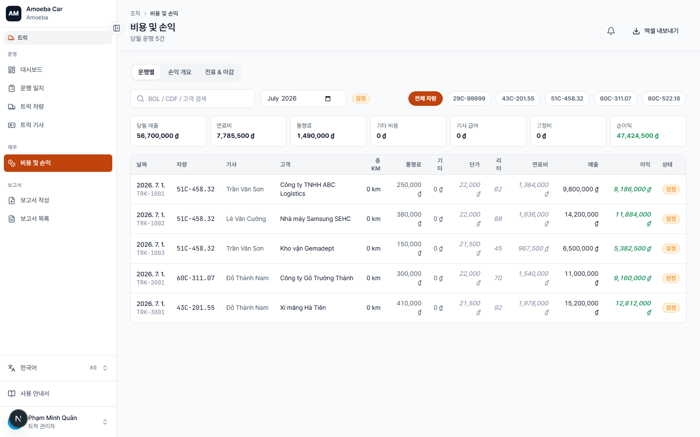
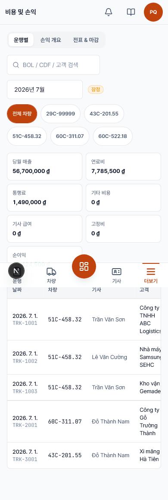

비용 & 손익
- URL
/truck/finance- 기간
- 상단에서 월 선택


사용 단계
- 상단에서 월 선택.
- 3개 탭 이동: 운행별 · 손익 개요 · 영수증 & 월 비용.
- 영수증 & 비용 탭에서 고정비(급여·감가·보험)와 연료 영수증 입력.
- 수치 확정 시 지역별 월 마감.
로직 / 규칙
- 월 고정비는 이익 계산 시 총비용에 합산.
- 마감 = 해당 (월 × 지역) 운행/비용 수정 잠금, 보고서 읽기 전용. 재개 가능(관리자만).
- 마감 시 연료 단가·정액을 확정해 일관된 비용 계산.